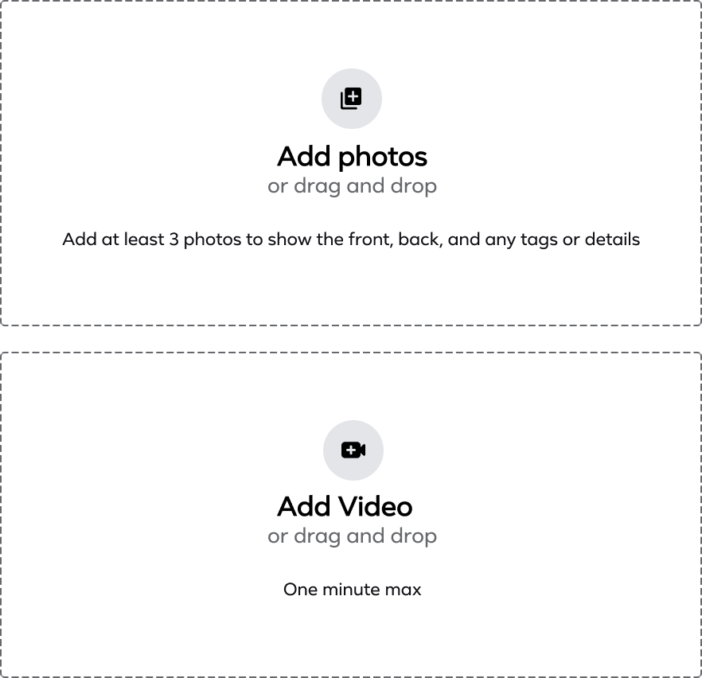
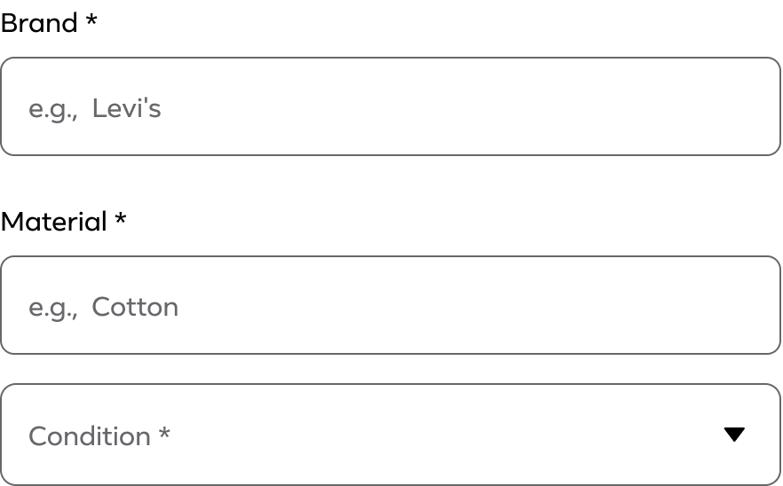
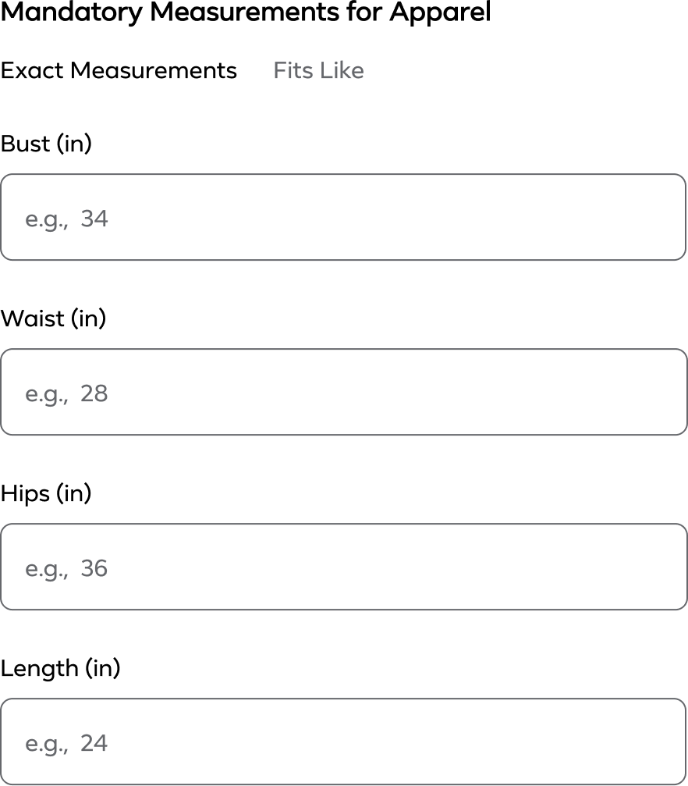
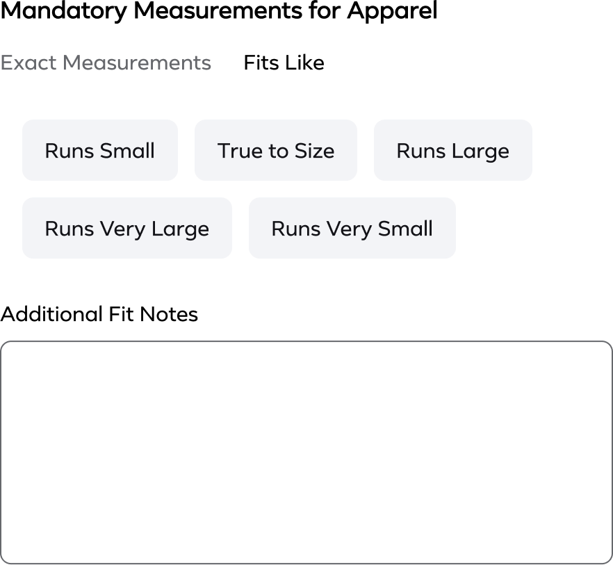
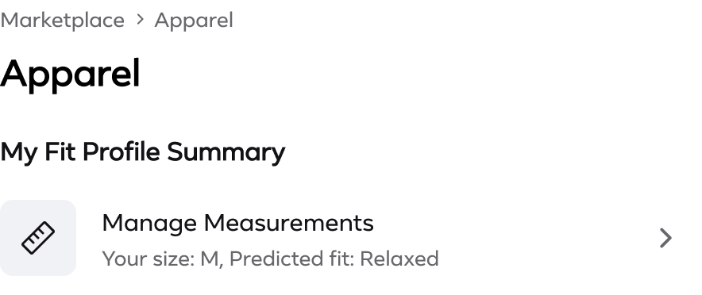
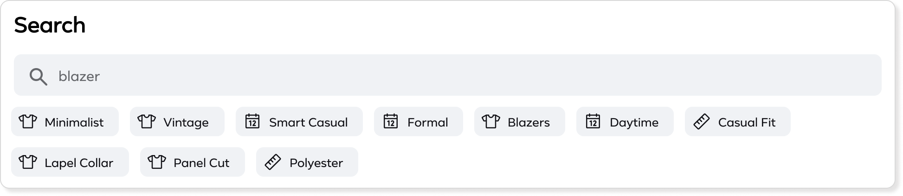

Facebook Marketplace
Facebook Marketplace is where many Canadians buy secondhand, but clothing is hard to find and harder to size. On my own, over 12 weeks, I researched why, then designed recommendations for how sellers list and how buyers search. An independent concept.
The approach
A mixed methods study, run on my own: a survey of 10 people for the numbers, 3 interviews for the reasons, and 2 observation sessions to see what people actually do.
Most participants were in Vancouver, shopping for secondhand clothing on Marketplace.
The gap
Marketplace is treated as a place to browse, not to shop for clothing with intent. When fit matters, people go to a store instead.
Search only matches keywords, so it misses fashion terms and intent. Finding something can mean 45 to 60 minutes of scrolling.
Many listings have no size, clear photos or condition notes. 30% of people I surveyed named sizing as their biggest barrier, and 80% don’t sell clothing at all because listing feels too complex.
“How can Facebook Marketplace’s clothing search be redesigned to address algorithm inadequacy and size related purchase anxiety while improving fashion discovery for Canadian users?”
I ran a survey on how people search for clothing on Marketplace, what worries them about size, which filters they want and why they don’t sell. 10 people answered, so I used it as a baseline to explore in interviews.
View survey ↗Sizing comes first
30% named sizing as their main concern when buying clothing on Marketplace.
Measure, don’t guess
50% want to filter listings by measurements.
Search lets people down
20% have given up on a search because the results were poor.
Selling feels too hard
80% don’t sell clothing because listing it feels too complex.
Three interviews of 25 to 30 minutes, with a project manager, a UX/UI designer and a UX student who also designs websites, on how they shop, decide and work around the platform.
One photo isn’t enough
Single photos, no brand, no material and vague condition labels. One unclear photo is reason enough to scroll past.
Sizes aren’t standard
“Size small but fits like medium” tells a buyer nothing they can use.
Buyers do the work
One keeps their own measurements in a notes app, just for Marketplace: data sellers could give but don’t.
Touch still matters
Some would rather feel the fabric in person before they buy.
I watched 2 people search for real clothing on Marketplace, to see where they refine, skip or give up, rather than relying on what they say.
“Without sizing, I can’t even consider an item regardless of how appealing it looks visually or how reasonable the price seems.”
Nicole, observation session
Nicole
Looking for an interview outfit on a $75 budget. Skipped listings without a size, then switched to brand names when style words failed.
Ayushi
Tried to judge whether a vintage size L leather jacket would give a slightly oversized look, and found no way to tell without trying it on.
“How can Facebook Marketplace’s clothing search be redesigned to address algorithm inadequacy and size related purchase anxiety while improving fashion discovery for Canadian users?”
View Miro board ↗I coded what people said and did across the survey, interviews and think aloud sessions, then grouped the codes into four themes. They decide what the recommendations fix, and what they can’t.
Size Verification Barriers
Missing or inconsistent size information, no standard and no try on. Buyers make up for it with brand knowledge and their own measurements, and 50% want to filter by measurements.
Search Algorithm Inadequacy
Search misreads generic and fashion terms, returns the wrong categories and offers no personal filters. People search again and again, and 20% give up.
Listing Information Gaps
Incomplete photos, missing descriptors, vague condition labels and vague seller replies. 80% don’t list clothing at all because it feels too complex.
Physical Shopping Preference
Some need to touch and try on before buying, and no return option adds risk. Better data can’t fully replace that.
Information seekers will buy when the data is there. That is where design can help most.
Interviews and sessions showed two kinds of shopper, with very different chances of buying clothing online.

Information seekers
Deliberate shoppers who track measurements, question sellers and trust brands they know. What stops them is missing data, so they are the biggest opportunity.
“If sellers provided measurements and multiple photos, I would confidently purchase fitted items online.”
Sandra George, persona
Experience seekers
They need to touch the fabric, see the drape and try it on. For fitted clothing, no amount of data replaces that.
“I need to touch the material and see the garment in three dimensions before committing to a purchase.”
Marcus Butler, persona
My recommendations target the two places where things break: sellers creating a listing, and buyers searching for clothing. They focus on information seekers, and accept that experience seekers need more than a screen can give.
80% avoid selling clothing, and incomplete listings break search and sizing for everyone. Required details, with guidance as sellers go, fix both.
Today’s listing page: few prompts, and most fields optional. View Figma file ↗
The recommended page with exact measurements: bust, waist, hips and length. Scroll to see it all. View Figma file ↗
The same page with the Fits like tab: a fit tag and notes, for sellers without a tape measure. View Figma file ↗
Four changes to the listing page, each from the research.
Photo standards
At least three photos: front, back, and the tag or a close up detail.

Required details
Brand, material and condition, chosen from set options before publishing.

Quality score
Shows how complete a listing is, with prompts to improve it, and how listing quality affects the seller’s rating.

Mandatory Measurements
Required for apparel, in two tabs: exact measurements (bust, waist, hips, length), or a fit tag such as Runs Small or True to Size, with notes.


Searches take 45 to 60 minutes and 20% give up. Search that understands fashion terms and each buyer’s fit turns scrolling into finding.

Today’s search: keyword results and general filters. View Figma file ↗
My Fit Profile, fit predictions, style tags and advanced filters. View Figma file ↗
Four changes to search, each from the research.
My Fit Profile Summary
Saves a buyer’s measurements once, so fit guidance follows every search.

Advanced Filters
Style, occasion, predicted fit, material, features, size and brand.

Smart Search Enhancements
Search moves to the top and knows related fashion terms, with style tags under it to refine in one tap.

Personalized Fit Predictions
A note under each listing, such as too fitted, true to size or relaxed, from the buyer’s saved measurements, or a plain note when there is no size to predict.

The recommendations keep Facebook’s own interface, so they fit into Marketplace as it is.
Based on research findings and design hypothesis, implementing these recommendations could achieve:
60 to 70%
Search time from 45 to 60 minutes down to 15 to 20, through search that understands fashion terms and personal fit predictions.
30 to 40%
More information seekers buying, through required sizing and fit predictions.
20% → 40 to 50%
More people selling clothing, through guided listing and a quality score.
I built the recommendations as two clickable prototypes in Figma: one for a seller creating a listing, and one for a buyer searching for clothing.
Both keep Facebook’s own layout and components, so each change can be judged against the page people already know.
Both flows also run as a working web prototype: search with your own measurements and watch every fit note change, or create a listing and see its quality score rise.
NoteAn independent concept, not affiliated with or endorsed by Meta or Facebook. Persona and problem photos from Unsplash.
Mixed methods gave me more than any one method could: the survey showed what, the interviews showed why, and the sessions showed what people do but don’t say.
I learned to separate what design can solve (missing information) from what it can’t (touch). Incomplete listings caused both the search and the sizing problems, so fixing them helps twice.
What surprised me: buyers lean on brands they know as a trust signal, and 80% avoid selling at all, which moved seller tools to the front. Next, I’d test the prototypes with more people, beyond 15 participants mostly in Vancouver.